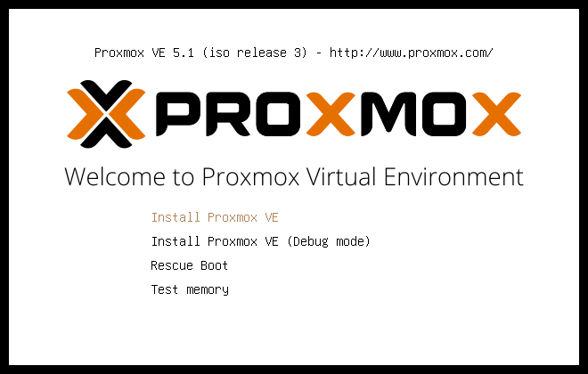

Como instalar Proxmox
Lo instalamos tal que cualquier sistema Linux:
Escogemos el idioma, el teclado y la zona horaria Ponemos una contraseña y un email ponemos la configuracion de red, la IP y el Gateway.

Reiniciamos y ya tendremos la instalacion hecha.